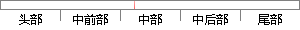

这个近似定理也被证明对于更广泛类别的激活函数也是适用的，其中就包括吸纳在常用的ReLU函数。
片段位置图

相似结果|
1
原句片段：这个近似定理也被证明对于更广泛类别的激活函数也是适用的，其中就包括吸纳在常用的ReLU函数。
相似片段 1：万能近似定理(universal approximation theorem)表明一个前馈神经网络如果具有...万能近似性质被证明对于比较广泛类别的激活函数都是适用的,其中包括整流线性...
相似片段 2：万能近似定理(universal approximation theorem)表明一个前馈神经网络如果具有线性输出...万能近似性质被证明对于比较广泛类别的激活函数都是适用的,其中包括整流线性单元。...
相似片段 3：万能近似定理(universal approximation theorem)表明一个前馈神经网络如果具有线性输出...万能近似性质被证明对于比较广泛类别的激活函数都是适用的,其中包括整流线性单元。...
|
※ 片段修改建议 ※
近似词参考：- 近似：类似
- 证明：证实
- 对于：对 对付
- 广泛：普遍 遍及
- 类别：种别
- 别的：此外 另外 其它 其余
- 适用：合用 实用
- 其中：此中 个中
- 包括：包罗 包孕 包含 囊括
- 常用：经常使用
系统自动生成语句：这个类似定理也被证实对更普遍种别的激活函数也是合用的，此中就包罗吸纳在经常使用的ReLU函数。
注：本片段修改建议为系统自动生成，仅供参考。